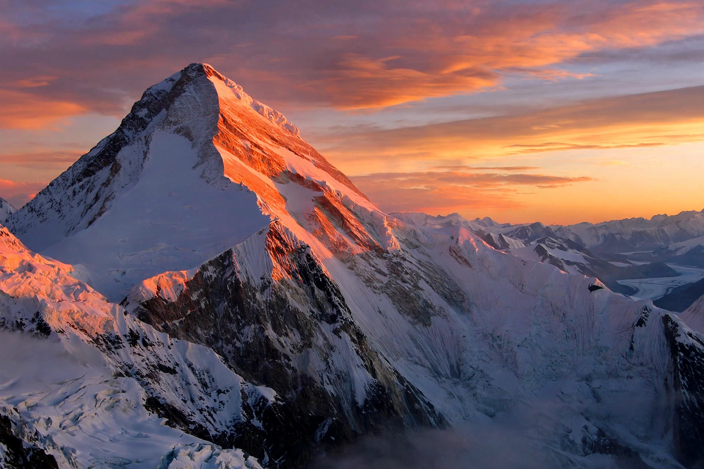

Khan Tengri

Khan Tengri is a mountain of the Tian Shan range on the border between Kyrgyzstan and Kazakhstan, near the point where both meet China. Its summit is a striking pyramid of marble that famously glows red at sunset, earning it the local name Kan-Too ("Blood Mountain"). The name Khan Tengri means "Lord of the Sky" in Turkic and Mongolic, evoking the god Tengri.
Elevation and geography
Khan Tengri's commonly quoted altitude is 7,010 meters, which includes an ice cap about 15 meters thick; the rock summit is 6,995 meters. This ambiguity long caused it to be counted, or excluded, among the world's 7,000-meter peaks. It is the second-highest mountain in the Tian Shan after Jengish Chokusu (Pobeda Peak, 7,439 m), and the highest point of Kazakhstan. It rises above the North and South Inylchek glaciers, among the longest non-polar glaciers on Earth.
Climbing history
The peak was long confused by early explorers with the higher Jengish Chokusu. The first ascent came in 1931, when a Ukrainian expedition under Mikhail Pogrebetsky climbed the West Ridge from the South Inylchek Glacier. Khan Tengri is one of the five "Snow Leopard" peaks of the former Soviet Union — a coveted mountaineering award requires summiting all five. Despite being the lowest of them, it is regarded as technically demanding, with severe cold and unpredictable weather. Base camps on the Inylchek glaciers are typically reached by helicopter from Karkara in Kazakhstan or Maida Adyr in Kyrgyzstan.